RB-Tree Principle
Create by 疯子 济南高新区
最近项目组不是很忙，闲暇之际，学了点数据结构的知识。
其实早就列入The Toad Of Alibaba计划之中了，只是这个知识点比较繁杂，单独拿出时间和文章阐述一下，红黑树在大学的数据结构没有涉及，他是AVL的变种和升级，大学着重基本原理就只有AVL，而红黑树是为了满足企业级的开发捣鼓出来的为了节省成本的一种数据结构，本文讲解的RBTree只有插入部分，没有删除部分，因为只有插入比较易懂，而且诠释了红黑树的基本原理，而删除不论是在AVL还是在RBTree中都是最复杂的一步，此文只讲原理不讲代码。
** 关键词以及概念准备**
在讨论之前先定义本文所使用的结点命名以及树的规则如下
命名：
X:要插入的结点，或者是特殊的结点
P：X结点的父结点
G：P的父结点
RBTree的规则：
（1）每一个结点不是红色的就是黑色的。
（2）根总是黑色的。
（3）如果结点是红色的，那么他的子结点必须是黑色的（反之倒不一定必须为真）。
（4）从根到叶结点或空子结点的每条路径，必须包含相同数目的黑色结点。
子结点类型：
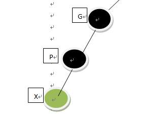
（1）外侧子孙节点（左子节点）
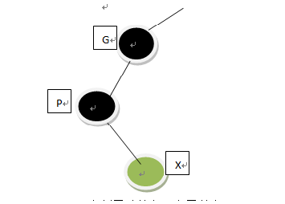
（2）右侧子孙节点（右子节点）
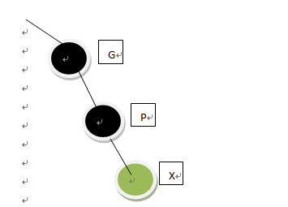
（3）外侧子孙节点（右子节点）
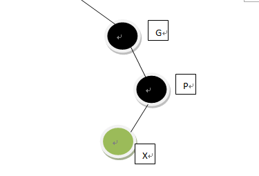
（4）内侧子孙节点（左子节点）
图中说明了将要插入子结点X的位置的的四种情况，总结为内侧子孙节点和外侧子孙节点。
当我们要往树里边插入一个节点的的时候分下边3个步骤：
（1） 在下行路途中的颜色变换。
（2） 在向下路途上的旋转
（3） 插入结点之后的旋转。
但是第二步和第三步顺序我们颠倒过来讲解，因为第三步的旋转理解之后对第四部的旋转的理解是轻而易举的。
1、 在下行路途中的颜色变换。
解释：
从root根结点开始向下搜索，当碰到如下情况是要进行颜色的变换
发现一个黑色结点有2个红色子结点，把2个红色子结点颜色变为黑色，父结点颜色变为红色（如果父结点为根，那么父结点还是黑色，遵守规则一）。
如图：
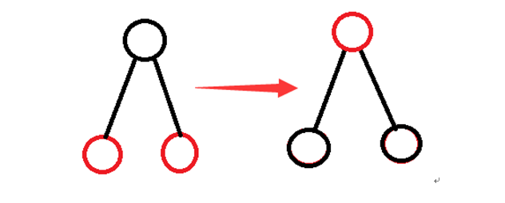
2、 插入结点之后的旋转。
2.1解释：
结点插入之后可能会造成树的规则的破坏，需要对树重新调整。
2.2调整策略：
新插入的节点有3中可能的情况：
如图：
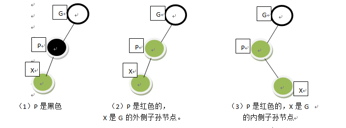
（1） P是黑色的。
（2） P是红色的，X是G的外侧子孙节点。
（3） P是红色的，X是G的内侧子孙节点。
调整方案：
（1） P是黑色的。
如果P是黑色的什么事也不做 直接把节点插入即可。
（2） P是红色的，X是G的外侧子孙节点。
如图：
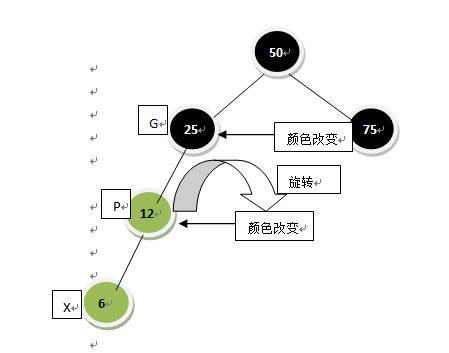
调整方法：
1） 改变X的祖父节点G（本例中是25）的颜色。
2） 改变X的父节点P（12）的颜色。
3） 以X的祖父节点G（25）为顶旋转，向X（6）上升的方向，在本例中是右旋。
如图是调整后的树：
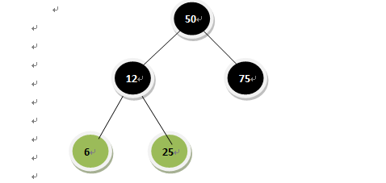
（3）P是红色的，X是G的内侧子孙节点。
调整步骤：
1） 改变X的祖父节点（本例中为25）的颜色。
2） 改变X（18）的颜色。
3） 用X的父节点P（12）作为顶旋转，向X上升的方向旋转，本例是左旋。
4） 再以X的祖父节点（25）为顶旋转，向X上升的方向旋转（本例为右旋）。
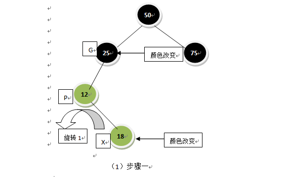
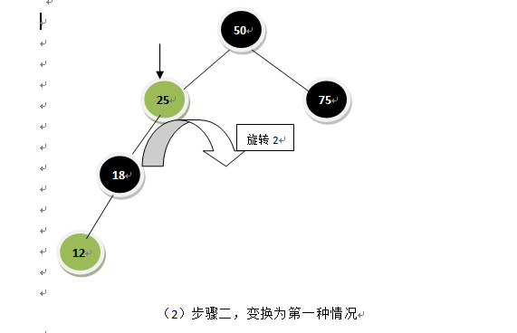
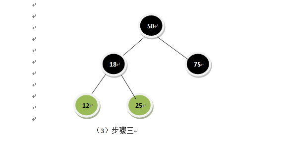
3、 在向下路途上的旋转
解释：在从根结点向下搜索遍历寻找插入位置的时候，会进行中途结点颜色的调整（即步骤一），以便于搜索继续向下进行，旋转之后可能会造成红-红冲突（规则三），出现冲突就需要进行树的旋转调整。
在向下的路径上有2中旋转的可能性：
（1） 外侧子孙节点。
（2） 内侧子孙节点。
3.1 外侧子孙节点
先说外侧子孙节点的情况，开始的时候只有一个根节点50，依次插入25,75,12,37,6,18。记住每次插入的新结点X颜色都是红色的。
注意：在插入12和6时需要进行颜色变换， 现在要插入值为3的节点，必须对12 以及他的子节点6和18 做颜色变换，下面会讲到。讲解的过程中遇到上边的第一种情况时会着重提醒。
本过程连带插入的过程，这也是先将插入过程的原因。
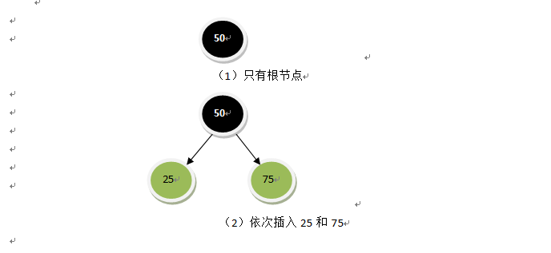
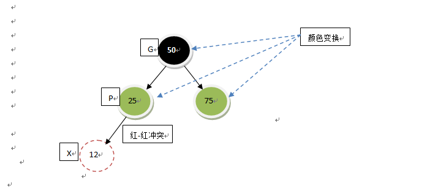
（3） 插入结点X（12）此时与父节点P发生红-红冲突（规则三），要先进行颜色变换才能将12插入，前边说过在向下搜索的时候如果遇到这种冲突就要进行颜色变换（根节点不变总是黑的）。
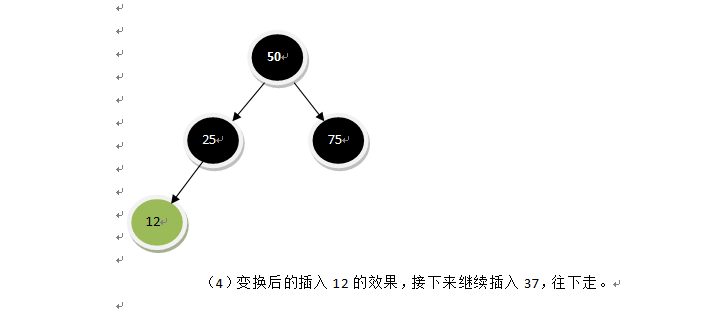
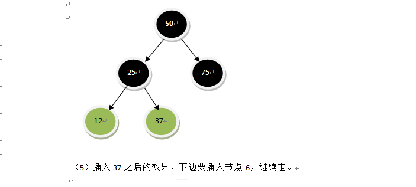
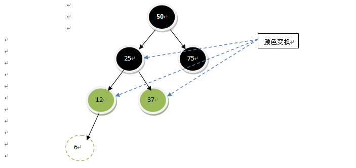
（6）在将要插入6的时候有遇到第三步的情况出现红-红冲突。按照第三步的做法进行调整（25为非根节点此时变为红色）。
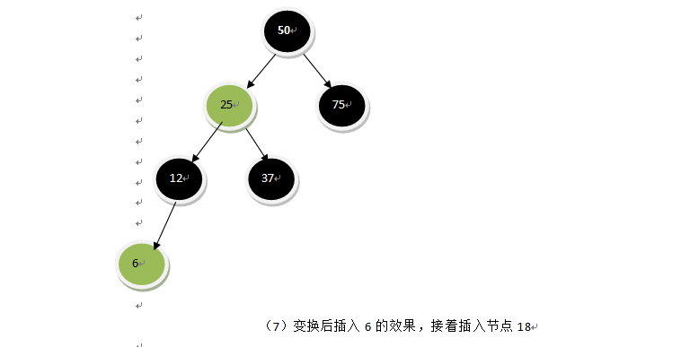
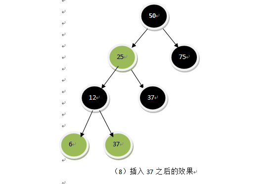
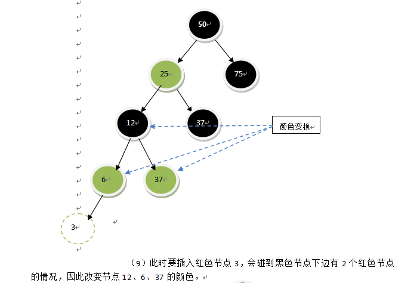
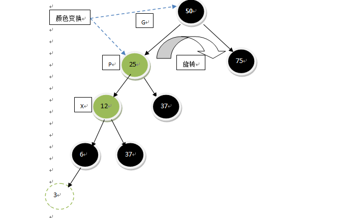
（10）颜色变换后会出现红-红颜色冲突，即12和他的父亲25颜色冲突，此时遇到前边说的第一种情况（在向下路途上的旋转遇到的外侧子孙节点的情况）这种情况的解决方案如下：
（10.1）改变X的祖父节点G（50）的颜色，忽略根必须是黑色的规则。
（10.2）改变X的父节点P（25）的颜色。
（10.3）以X的祖父节点G（50）为顶旋转，向X上升的方向旋转（右旋）。
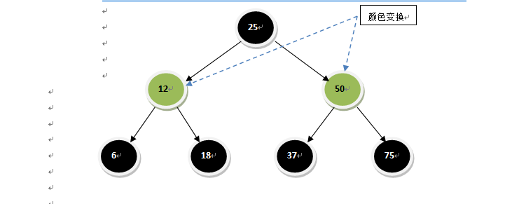
（11）调整后的RB-Tree，此时要插入节点3，又会遇到一个黑色加点下边有2个红色节点的情况，那么就改变25、12、50的颜色，然后插入节点3，见下一步。
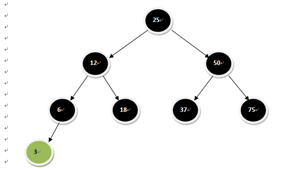
（12）变换颜色后插入节点3。
至此一颗树从一个节点到构件完成的过程走完了（为了讲解在向下路途上的旋转遇到外侧子孙节点的情况，顺便把前边的知识串了一下），接下来再说在向下路途上的旋转遇到内侧子孙节点的情况。
3.2 内侧子孙节点
树的构件过程在这一步不再细致的说明了，在3.1已经过了一遍，只说最后遇到内侧子孙节点的情况。
解决方案：
（1）
根为50，依次插入25,75,12,37,31,43，在插入12和31之前需要变换颜色。
现在试着插入一个新的节点，值为28，需要做颜色变换（节点37处），这时会出现红-红冲突，如图：
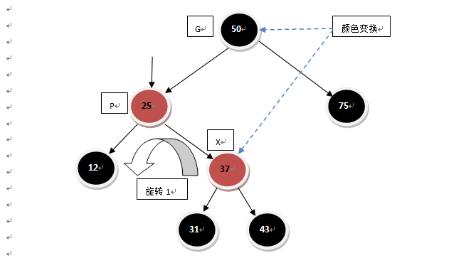
变换之后：
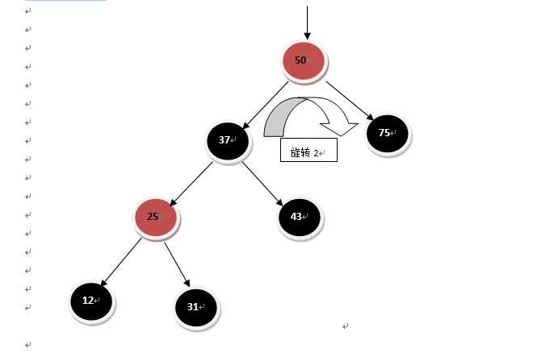
最后插入节点28之后：
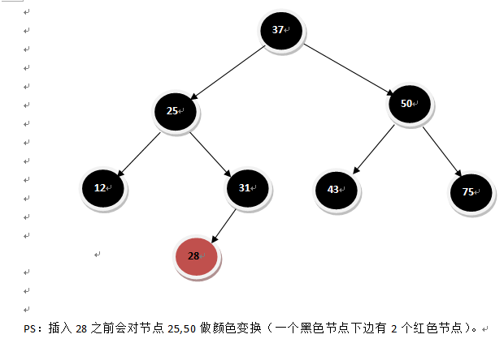